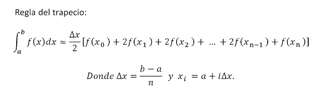

Introducción
El método del trapecio es una técnica numérica utilizada para aproximar el valor de una integral definida. Se basa en dividir el área bajo una curva en varios trapecios y sumar estas áreas para obtener una estimación de la integral.
Formulación Matemática

Pasos del Método del Trapecio
- Divide el intervalo \([a, b]\) en \(n\) subintervalos de igual tamaño.
- Calcula el valor de la función en los extremos de cada subintervalo.
- Aplica la fórmula del trapecio para cada subintervalo y suma los resultados.
Ventajas y Limitaciones
Ventajas
- Simplicidad: Fácil de entender e implementar.
- Flexibilidad: Puede aplicarse a funciones no lineales y no continuas.
- Convergencia: Converge a la solución exacta para funciones lineales.
Limitaciones
- Precisión: Puede requerir un número significativo de subintervalos para lograr precisión.
- No adecuado para todas las funciones: No funciona igual de bien para todas las funciones, especialmente aquellas con oscilaciones rápidas.
- No exacto para funciones no lineales: Aunque mejora con más subintervalos, puede no ser exacto para funciones no lineales.
Comentarios y Retroalimentación
¿Tienes alguna pregunta o comentario sobre el Método del Trapecio? ¡Déjanos saber!